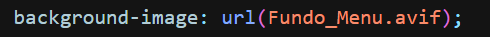
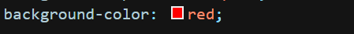
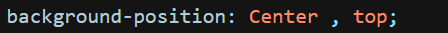
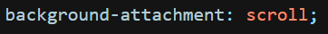
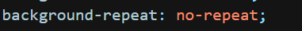
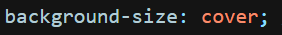

Nessa aula, iremos nos aprofundar um pouco na definição do design da página, mexendo com a cor e imagem de fundo da página, usando diversos tipos dos famosos "Backgrounds".
Tipos de Background:
Background-Image - Utilizado para definir uma imagem de fundo do site ou de alguma parte do mesmo.

Deve-se usar a atribuição de "Url()" e colocar o caminho da imagem.
Background-Color - Utilizado para definir uma cor de fundo do site ou de alguma parte desejada, assim como o image.

Você pode selecionar o código hexadecimal de uma cor específica clicando aqui.
OBS: É possível utilizar o image e o color juntos, na mesma página.
Background-position - Com ele, você definirá a posição da imagem de fundo na página.

Possui 2 tipos de atributos, o vertical e o horizontal.
Vertical - Define a posição em vertical (Linha), tem como valores: Left, center e right.
Horizontal - Define a posição em Horizontal (Coluna), tem como valores: Top, center e Buttom.
Background-attachment - Utilizado para definir como a imagem de fundo irá se comportar ao rolar a página.

Os 2 valores mais utilizados são fixed (Imagem fica fixa) e scroll (imagem rola junto com a página).
Background-repeat - Define se a imagem será repetitiva no site.

Possui 4 valores, sendo "Repeat" o padrão. Os outros são:
No-repeat: Define que a imagem não deve ser repetida nenhuma vez.
Repeat-X: Define que a imagem deve ser repetida apenas na vertical.
Repeat-Y: Define que a imagem deve ser repetida apenas na horizontal.
Background-size - Usado para definir o tamanho da imagem de fundo.

Pode ser usado com dois valores: cover (Imagem tomará o fundo todo) e contain (Será aumentada até o limite de que ela não estique).
Também pode ser definido em pixels. o primeiro valor equivale ao width e o segundo ao height.
Ex: Background-size: 200px 450px;
Como pode ver, existem diversos tipos de backgrounds. Clique no botão abaixo para ver outros tipos e valores.